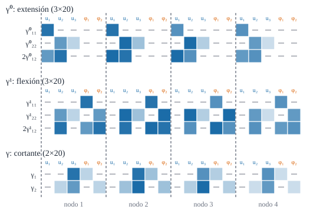

El «diccionario» que traduce los veinte desplazamientos nodales en extensión, flexión y cortante

Figura 25.1: Valor absoluto de las matrices \(\mathbf H_E\) (extensión), \(\mathbf H_B\) (flexión) y \(\mathbf H_S\) (cortante) de un elemento sobre un cilindro, en un punto de integración. Cada grupo de cinco columnas es un nodo; los guiones son ceros exactos. Cálculo calculado con Geometria.
Cómo se escribe, con una sola matriz, qué deformación produce cada uno de los veinte movimientos posibles del elemento
Objetivos y prerrequisitos
Objetivos. Al terminar el tema sabrás:
escribir \(\boldsymbol\gamma^0=\mathbf H_E\boldsymbol\delta\), \(\boldsymbol\gamma^1=\mathbf H_B\boldsymbol\delta\) y \(\boldsymbol\gamma_S=\mathbf H_S\boldsymbol\delta\) a partir de las relaciones del tema D6;
leer el patrón de ceros de cada matriz y decir qué g.d.l. intervienen en cada deformación;
calcular a mano una columna de \(\mathbf H\) para un caso sencillo (placa plana);
identificar el cortante parásito en un campo de flexión y ver por qué los promedios lo eliminan;
decir qué hay de pendiente en el paso a componentes físicas.
curvatura y Christoffel de la superficie (temas C2, C3)
NotaExplicación para ingenieros: la matriz H es un diccionario
Piensa en un traductor automático: se le da un texto en «idioma nodos» (20 números: cómo se mueven los cuatro nodos) y devuelve el texto en «idioma deformaciones» (extensión, flexión, cortante). Cada columna es una frase del diccionario: «si sólo se mueve el g.d.l. \(i\) una unidad, esto es la deformación que se produce». Programar el elemento consiste en rellenar el diccionario una sola vez y usarlo en cada punto de integración. Y el mapa de la Figura 25.1 muestra qué casillas tienen entrada: por ejemplo, los giros no producen extensión, y los desplazamientos tangentes sólo producen flexión si la lámina es curva.
25.1 De los campos a las matrices
Las relaciones del tema D6 son lineales en los campos y sus primeras derivadas:
con \(u_{\alpha\|\beta}=u_{\alpha,\beta}-\Gamma^\gamma_{\alpha\beta}u_\gamma\). Sustituyendo la interpolación ecuación 24.2, cada deformación es una combinación lineal de los 20 valores nodales: sus coeficientes forman una fila de \(\mathbf H\). La columna asociada al g.d.l. \(c\) del nodo \(k\) se obtiene tomando \(N_k\) como único campo no nulo en la componente \(c\) y evaluando ecuación 25.1: no hay que derivar nada nuevo.
Definición 25.1 (Matrices deformación–desplazamiento) Para el punto \((\xi,\eta)\) del elemento, \[
\boldsymbol\gamma^0=\mathbf H_E\,\boldsymbol\delta,\qquad \boldsymbol\gamma^1=\mathbf H_B\,\boldsymbol\delta,\qquad \boldsymbol\gamma_S=\mathbf H_S\,\boldsymbol\delta,
\tag{25.2}\] donde las entradas dependen de \(N_k\), \(N_{k,\beta}\) y de la geometría \((\Gamma^\gamma_{\alpha\beta},b_{\alpha\beta},b^\rho_\alpha)\)en ese punto.
NotaUn poco de historia: el elemento «isoparamétrico»
Las matrices de este tema se evalúan punto a punto en el elemento de referencia \((\xi,\eta)\), que se proyecta sobre la geometría real. Cuando la misma interpolación sirve para la geometría y para los desplazamientos se habla de elemento isoparamétrico, nombre que se asocia al artículo de I. Ergatoudis, B. M. Irons y O. C. Zienkiewicz «Curved isoparametric, “quadrilateral” elements for finite element analysis» (International Journal of Solids and Structures, 4, 31–42, 1968). El elemento de lámina «degenerado» de Ahmad, Irons y Zienkiewicz (1968, 1970) fue su aplicación a láminas (véase E3). Un capítulo de Springer, al que no se pudo acceder, atribuye además la idea de origen a un informe de Ian Taig de 1962.
Las columnas de \(\mathbf H_E\) son, para el nodo \(k\):
g.d.l.
\(\gamma^0_{11}\)
\(\gamma^0_{22}\)
\(2\gamma^0_{12}\)
\(u_1\)
\(N_{k,1}-\Gamma^1_{11}N_k\)
\(-\Gamma^1_{22}N_k\)
\(N_{k,2}-2\Gamma^1_{12}N_k\)
\(u_2\)
\(-\Gamma^2_{11}N_k\)
\(N_{k,2}-\Gamma^2_{22}N_k\)
\(N_{k,1}-2\Gamma^2_{12}N_k\)
\(u_3\)
\(-b_{11}N_k\)
\(-b_{22}N_k\)
\(-2b_{12}N_k\)
\(\varphi_1,\varphi_2\)
0
0
0
Los giros no intervienen (la fila de ceros de la Figura 25.1). Los términos con \(\Gamma\) vienen de la derivada covariante; los de \(u_3\), de la curvatura: el desplazamiento normal estira la lámina si ésta es curva (el hinchado de un globo).
Ejemplo 25.1 (Ejemplo resuelto: el hinchado de un cilindro) En el cilindro de eje \(x\) y radio \(R\) con normal exterior, \(a_{11}=1\), \(a_{22}=R^2\), \(b_{22}=-R\) y \(b_{11}=b_{12}=0\). Si todos los nodos tienen \(u_3=\bar u\) y el resto nulo, \(u_3=\bar u\) en todo el elemento y la única fila no nula de \(\mathbf H_E\boldsymbol\delta\) es \(\gamma^0_{22}=-b_{22}\bar u=R\bar u\). La deformación física en la dirección circunferencial es \(\gamma^0_{22}/a_{22}=\bar u/R\): para \(R=500\) mm y \(\bar u=0{,}01\) mm, \(\varepsilon_{\text{aro}}=\mathbf{2\cdot10^{-5}}\). Es el resultado de la tabla de D6, ahora obtenido con los 20 g.d.l. Resultado analítico; la práctica lo recalcula con matrices_H.
En el Ejemplo 25.1, ¿cuánto vale la deformación circunferencial física \(\varepsilon_{\text{aro}}\) si \(R=500\) mm y \(u_3=0{,}01\) mm en todos los nodos?
En \(\mathbf H_B\) intervienen los giros (\(\varphi_{\alpha\|\beta}\)) y, por la curvatura, los desplazamientos tangentes y normales. En \(\mathbf H_S\) intervienen \(\varphi_\alpha\), \(u_{3,\alpha}\) y, de nuevo por la curvatura, \(u_\rho\). Para una placa plana (\(b_{\alpha\beta}=0\), \(\Gamma=0\) con \(\theta^\alpha\) cartesianas) todo se simplifica a lo que ya se conoce de Reissner–Mindlin:
Las columnas de la placa son: \(\varphi_\alpha\to(N_{k,\beta}\ \text{en}\ \gamma^1,\ N_k\ \text{en}\ \gamma_\alpha)\) y \(w\to(\,N_{k,\alpha}\ \text{en}\ \gamma_\alpha)\). El acople\(\varphi_\alpha+w_{,\alpha}\) es el responsable del bloqueo que se explica a continuación.
AdvertenciaDos puntos que suelen confundir
\(\mathbf H\) depende del punto. En una lámina curva, \(\Gamma\) y \(b\) cambian de un punto a otro: hay que reconstruir \(\mathbf H\) en cada punto de Gauss, no una sola vez por elemento.
Rotaciones y flechas no son «independientes» del cortante. Si \(\varphi_\alpha=-w_{,\alpha}\) (Kirchhoff) el cortante es nulo; la discretización lo violará si no se cuida, y ahí empieza el bloqueo.
25.4 El cortante parásito
Ejemplo 25.2 (Ejemplo resuelto: flexión pura que el elemento ve con cortante) Placa cuadrada unidad (E2, E3). Se impone el campo de flexión pura \(w=\tfrac12x^2\), \(\varphi_1=-x\) (de modo que \(\varphi_1=-w_{,x}\) y \(\gamma_1=0\)exactamente). Con los valores en los nodos \(w_k=\tfrac12x_k^2\) y \(\varphi_{1k}=-x_k\), el elemento interpola linealmente\(w\): \(w_h=\tfrac12x\). Entonces \[
\gamma_1^h=\varphi_1+w_{h,x}=-x+\tfrac12=\tfrac12-x,\qquad \gamma_1^h(0)=+\tfrac12,\quad \gamma_1^h(1)=-\tfrac12,\quad \overline{\gamma_1^h}=0 .
\] El elemento «cree» que hay un cortante que va de \(+\tfrac12\) a \(-\tfrac12\) y almacena energía con él: es cortante parásito. En un elemento delgado, el cortante pesa tanto (\(\propto1/t^2\)) que obliga a \(w\) a ser casi cero: la placa se bloquea. Pero su media sobre el elemento es exactamente nula: un elemento que use la media del cortante en lugar de su valor puntual no ve cortante parásito. Es el argumento del tema E5. Resultado analítico.
En el Ejemplo 25.2, ¿cuánto vale el cortante parásito \(\gamma_1^h\) en el borde \(x=0\)?
\(\gamma_1^h=\varphi_1+w_{h,x}\) con \(\varphi_1=-x\) y \(w_h=x/2\).
\(\gamma_1^h(0)=-0+\tfrac12=\tfrac12\).
ImportanteIdea clave: promediar elimina el parásito
El cortante parásito varía linealmente en el elemento y tiene media nula en flexión pura. Reemplazar el cortante por su valor medio en cada subdominio (E6–E7) quita toda esa energía falsa y deja intacta la del cortante real (que sí tiene media no nula).
En el elemento de lámina, los giros \(\varphi_1,\varphi_2\) no contribuyen a la deformación de extensión \(\boldsymbol\gamma^0\).
Verdadero.ecuación 25.1 no contiene \(\varphi_\alpha\) en \(\gamma^0_{\alpha\beta}\); es la fila de ceros de la Figura 25.1.
25.5 Componentes físicas (pendiente)
Las deformaciones anteriores son covariantes: sus unidades dependen del sistema de coordenadas. Para interpretarlas (o aplicar un criterio de fallo) se pasan a componentes físicas: en una base ortogonal, \(\gamma_{\langle\alpha\beta\rangle}=\gamma_{\alpha\beta}/\sqrt{a_{\alpha\alpha}a_{\beta\beta}}\) (sin suma), como se hizo en el Ejemplo 25.1. En una base no ortogonal (placa oblicua) la definición de «componente física» admite más de una elección razonable.
AdvertenciaConvenio por confirmar
Las componentes físicas en bases no ortogonales y los g.d.l. físicos (si los desplazamientos nodales deben interpretarse como componentes cartesianas) son decisiones del autor aún no fijadas. Mientras tanto, el libro trabaja con g.d.l. covariantes y da las componentes físicas sólo en bases ortogonales.
TipAplicación real: bandas extensométricas en estructuras y en hueso
ilustrativo Lo que mide una banda extensométrica pegada a una cubierta de hormigón, a un depósito o al hueso de un animal de laboratorio es justamente una componente física de la deformación en una dirección. Por eso la matriz \(\mathbf H\) se usa «al revés» en la validación: se calcula \(\boldsymbol\gamma=\mathbf H\boldsymbol\delta\) en el punto donde está pegada la banda y se compara con la lectura. Idea de aplicación sin fuente verificada: es una orientación, no una cita.
25.6 Práctica guiada en Julia
TipEjemplo computacional
calculado (1) El hinchado del cilindro del Ejemplo 25.1 con matrices_H. (2) Comprobación de que \(\mathbf H\boldsymbol\delta\) coincide con las relaciones de D6 evaluadas sobre el mismo campo interpolado (diferencias de \(10^{-12}\)). (3) El cortante parásito del Ejemplo 25.2 en el elemento plano.
usingGeometria, LinearAlgebraR =500.0; r = θ -> [θ[1], R *sin(θ[2]), R *cos(θ[2])]X = [0.0100.0100.00.0; 0.00.00.10.1]ξ, η =0.3, -0.2g, N, dN, dA, _, _, _ =punto_elemento(r, X, ξ, η, 1.0, 0.3, 1.0)HE, HB, HS =matrices_H(g, N, dN)# (1) hinchado: u₃ = 0.01 en todos los nodosδ =zeros(20); δ[3:5:20] .=0.01γ0= HE * δ(γ⁰₂₂ = γ0[2], ε_aro = γ0[2] / g.a[2, 2], teórica =0.01/ R, forma =size.((HE, HB, HS)))
# (3) Cortante parásito en el elemento plano: w = x²/2, φ₁ = −x en los nodosplana =placa_oblicua(π/2); Xp = [0.01.01.00.0; 0.00.01.01.0]δp =zeros(20)for k in1:4 x = Xp[1, k]; δp[5(k-1)+3] = x^2/2; δp[5(k-1)+4] =-xendfunctioncortante1(ξ, η) gp, Np, dNp, _, _, _, _ =punto_elemento(plana, Xp, ξ, η, 1.0, 0.3, 1.0) HSp =matrices_H(gp, Np, dNp)[3] (HSp * δp)[1]endvalores = [cortante1(ξ, 0.0) for ξ in (-1.0, 0.0, 1.0)](γ₁_en_x_0_0p5_1 = valores, media =sum(cortante1(ξ, η) for ξ in (-1/√3, 1/√3), η in (-1/√3, 1/√3)) /4)
(γ₁_en_x_0_0p5_1 = [0.5, 0.0, -0.5], media = 2.7755575615628914e-17)
25.7 Ejercicios
Giros y membrana. Explica por qué un movimiento de sólo-giros no genera energía de membrana en este elemento.
NotaSolución
Porque \(\gamma^0_{\alpha\beta}\) en ecuación 25.1 sólo contiene \(u_\alpha\) y \(u_3\): los giros \(\varphi\) aparecen únicamente en \(\gamma^1\) y \(\gamma_S\).
Placa plana. Escribe la fila \(\gamma_1\) de \(\mathbf H_S\) para el nodo \(k\) de una placa plana con \(\theta^\alpha\) cartesianas.
NotaSolución
\(\gamma_1=\varphi_1+w_{,1}\): la columna \(\varphi_{1k}\) vale \(N_k\), la columna \(w_k\) vale \(N_{k,1}\) y las demás, 0.
Contar entradas. ¿Cuántos g.d.l. entran en \(\gamma^0_{11}\) para una lámina curva? ¿Y en una placa plana?
NotaSolución
Curva: \(u_1,u_2,u_3\) de cada nodo (12); plana (\(b=0\), \(\Gamma=0\)): sólo \(u_1\) de cada nodo (4).
La doy por superada si…
Escribo ecuación 25.1 y sé qué campo entra en cada deformación.
Obtengo una columna de \(\mathbf H\) sustituyendo \(N_k\) en una componente.
Reconozco el cortante parásito y sé que su media en flexión pura es nula.
Sé que las componentes físicas sólo se dan en bases ortogonales y que el resto está por confirmar.
NotaFuentes, correcciones y qué queda pendiente
Fuentes. Texto autónomo; las relaciones de partida son las de D6 (Novozhilov 1959; Flügge 1972); la construcción de \(\mathbf H\) es estándar en elementos finitos (Bathe 1996; Hughes 1987). La equivalencia \(\mathbf H\boldsymbol\delta\) ↔︎ relaciones de D6 se comprueba con test automático (error \(<10^{-8}\)).
Qué queda pendiente. Los convenios de componentes físicas no ortogonales y de g.d.l. físicos; este tema no lleva nota histórica por no haber fuente verificada; revisión visual de la figura; la «Aplicación real» es una orientación sin fuente.
Hughes, T. J. R. 1987. The Finite Element Method: Linear Static and Dynamic Finite Element Analysis. Prentice-Hall.
Bathe, K. J. 1996. Finite Element Procedures. Prentice Hall.
Flügge, W. 1972. Tensor Analysis and Continuum Mechanics. Springer-Verlag.
Novozhilov, V. V. 1959. The Theory of Thin Shells. P. Noordhoff ltd.
Referencias
Son las mismas que aparecen en el margen, junto al texto.
Bathe, K. J. 1996. Finite Element Procedures. Prentice Hall.
Flügge, W. 1972. Tensor Analysis and Continuum Mechanics. Springer-Verlag.
Hughes, T. J. R. 1987. The Finite Element Method: Linear Static and Dynamic Finite Element Analysis. Prentice-Hall.
Novozhilov, V. V. 1959. The Theory of Thin Shells. P. Noordhoff ltd.